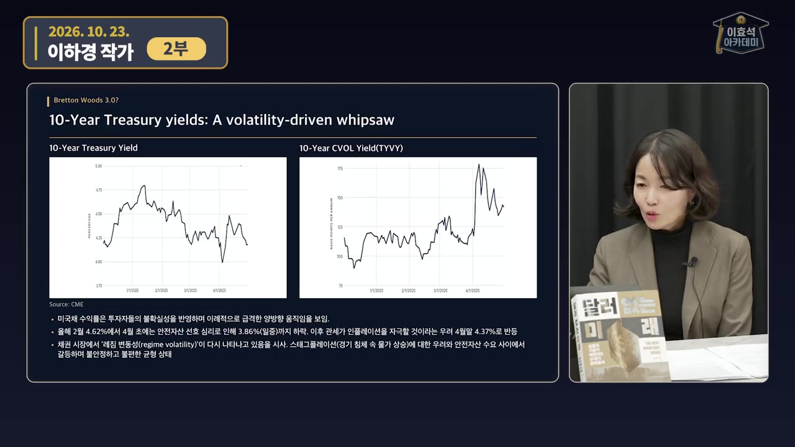
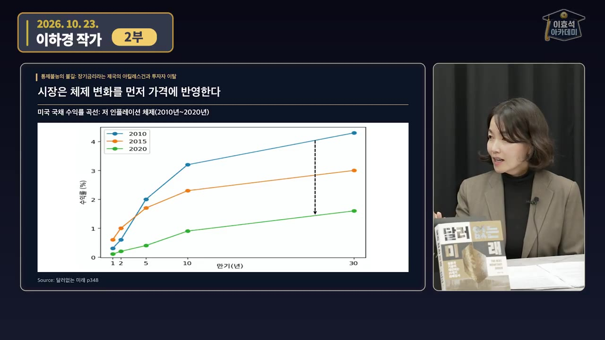
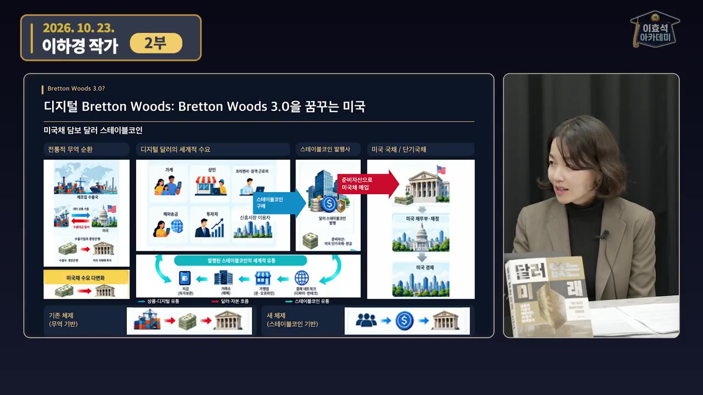
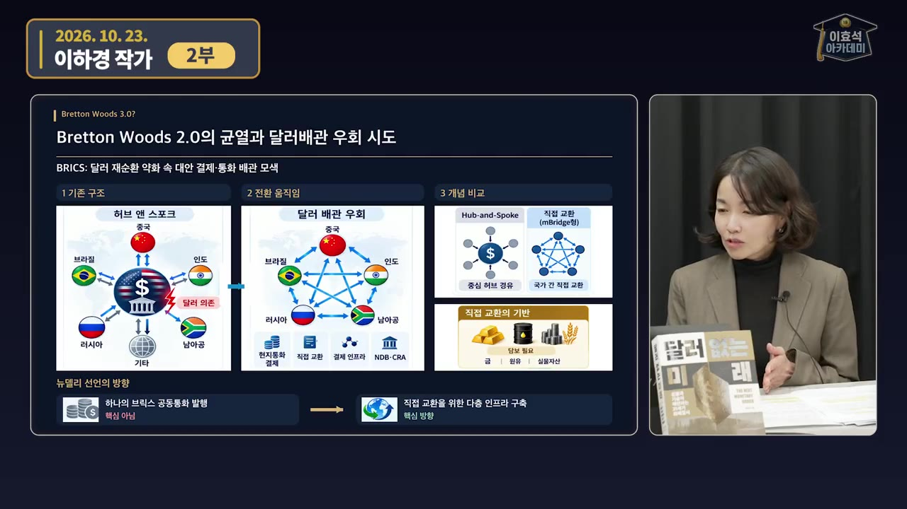
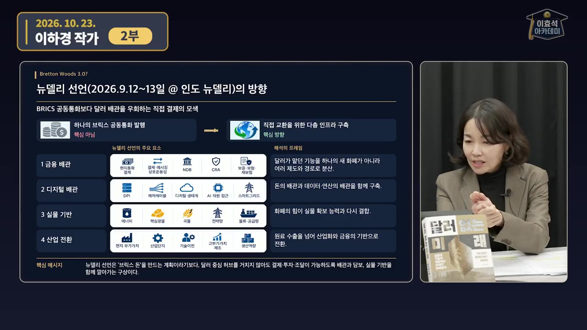

"금리 내렸는데 장기금리는 왜 뛰나"… 미국에 돈 빌려주던 시장이 더 비싼 이자를 요구하는 이유ㅣ이하경 작가 [2부]
🎙️ 자막 대신 영상 음성을 받아써서 정리 (ko (음성 받아쓰기·GPU))
▶ 원본 영상 보기한눈에 보기
- 2026년 연준이 정책금리를 내렸는데도 미국 장기국채 금리는 올랐습니다. 이하경 작가는 이를 시장이 "누가 미국채를 계속 사 줄까"를 걱정해 더 높은 이자를 요구하는 신호로 봅니다.
- 40년 동안 금리를 끌어내린 힘(세계화로 인한 저물가, 수출국의 미국채 매입, "연준이 사 줄 것"이라는 믿음)이 약해졌습니다. 작가는 이것을 미국이 주도한 '브레튼우즈 2'에 금이 간 것으로 해석합니다.
- 미국은 대안으로 단기국채를 담보로 하는 달러 스테이블코인(지니어스법)을 키우고 있습니다. 전 세계가 달러를 '쓰기만 해도' 미국채 수요가 생기는 '브레튼우즈 3.0'을 노린다는 해석입니다.
- 작가는 이것을 '디지털 올가미'라고 부릅니다. 스테이블코인이 널리 퍼지면 각 나라의 통화주권(금리 정책 효과)이 약해지고, 접근할 수 있는 사람과 없는 사람 사이에 자산 격차가 벌어질 수 있다고 경고합니다.
- 반대편에서는 BRICS 뉴델리 선언과 mBridge처럼 달러를 거치지 않고 직접 결제하는 망이 만들어지고 있습니다. 작가는 한국이 미국 방식과 중국 방식을 둘 다 열어 두고 통화주권을 지킬 방법을 찾아야 한다고 말합니다.
이런 분께 도움이 됩니다
- 금리 인하에도 미국 10년물 금리가 오르는 이유를 구조적으로 알고 싶은 투자자
- 스테이블코인·CBDC·BRICS 결제망이 달러 패권과 원화에 어떤 영향을 주는지 큰 그림을 원하는 분
핵심 내용
장기금리 상승 = 저금리 시대의 끝
- 작가는 정책금리를 내렸는데 장기금리가 오른 것을 시장이 미국채의 위험을 먼저 가격에 반영한 결과로 봅니다. "이 정도 금리는 줘야 니네 장기국채에 투자해 줄게"라는 뜻이라는 설명입니다. (5:02)
- 시장의 분위기를 이렇게 표현합니다. 1~5년물은 괜찮지만 10년 이상은 돌려받지 못할 수도 있으니 금리라도 더 달라는 것입니다.
- 작가는 2022년 이후 금리가 오르기 시작한 시점을 40년 저금리 시대가 끝난 때로 봅니다.
- 미국 10년물 금리는 최근 5%를 넘었다가 촬영 시점(10/23)에는 크게 내려왔습니다. 그래도 작가는 높은 금리가 오래 가는 흐름(Higher for Longer)은 이어질 것으로 봅니다. (6:00)
- 한동안 채권시장에는 휩소(방향 없이 양쪽으로 크게 출렁이는 장)가 많았습니다.

💡 시장은 정책보다 먼저 움직인다. 장기금리 상승은 미국채를 누가 사 줄지에 대한 불안을 가격으로 보여 주는 것이다.
40년간 금리가 내려간 이유
- 세계화: 가장 싼 곳에서 만들어 파는 글로벌 공급망과 IT 기술 덕분에 저물가·저성장이 이어질 거라는 기대가 자리 잡았습니다.
- 수출국의 미국채 매입: 중앙은행과 대형 연기금이 위기 때마다 실제로 미국채를 샀습니다.
- 최종 대부자 연준에 대한 믿음: "여차하면 연준이 사 줄 것"이라는 기대가 있었고, 팬데믹 때 정점을 찍었습니다. (1:19)
- 시장은 이것을 반복해서 겪으며 배웠기 때문에 장기금리가 바닥에 가까워도 불안해하지 않았습니다.
수익률 곡선으로 본 변화
- 수익률 곡선(만기별 국채 금리를 한 시점에 이어 그린 선)은 정상이라면 오른쪽으로 갈수록 올라가야 합니다. 오래 빌려줄수록 이자를 더 받아야 하기 때문입니다.
🔁 미국채 수익률 곡선의 변화
- 2010년 제로금리
- 2022년 급격한 인상
- 2024년 역전 지속
- 2026년 인하 중 장기금리 상승
- 12010년 제로금리
금융위기 뒤 금리를 거의 0으로 낮췄고, 10년 이하 금리는 거의 0이었습니다. 장기금리는 계속 내려가는 추세였습니다. (2:18)

2010·2015·2020년 미국채 수익률 곡선, 저인플레이션 체제 · ▶ 2:33 - 22022년 급격한 인상
1년 동안 75bp 인상 4번, 50bp 1번, 25bp 1번(자막 기준)을 했고, 2023년 상반기까지 금리를 올렸습니다.
- 단기금리가 장기금리보다 높은 역전이 생겼습니다. 시장이 여전히 저인플레 시대로 돌아갈 거라고 믿었다는 뜻입니다.
- 32024년 역전 지속
장기금리도 조금 올랐지만 장단기 금리 역전은 그대로였고, 시장은 여전히 안전하다고 봤습니다.
- 42026년 인하 중 장기금리 상승
정책금리를 내렸는데도 장기국채 금리는 크게 올랐습니다. (4:50)
브레튼우즈 2의 균열: 중국이 돈을 빌려주지 않는다
- 예전에는 순환 구조가 있었습니다. 수출 제조국이 상품을 팔아 번 달러로 미국채를 사고, 그 돈이 미국 재무부로 흘러가는 방식입니다. 이 구조가 미국 재정지출이 너무 커지면서 흔들리고 있다고 설명합니다. (6:45)
- 미국채 발행 잔액은 28조 달러까지 늘었지만, 해외 중앙은행이 가진 잔액은 늘지 않았습니다.
- 중국은 여전히 큰 흑자를 내고 있습니다. 대미 수출이 줄었을 뿐 베트남·멕시코로 옮겨 갔을 뿐입니다. 번 달러로는 원유·금속 광산·전력망·데이터센터에 직접 투자합니다. (7:43)
💡 쉽게 말하면 중국이 미국에 돈을 빌려주는 대신 눈에 보이는 실물을 사기 시작했다.
미국의 해법: 미국채 담보 달러 스테이블코인
- 스테이블코인은 블록체인 기반 디지털 네트워크에서 쓰는 달러입니다. 발행사는 1달러어치를 팔 때마다 그만큼의 준비자산을 가지고 있어야 합니다. (8:35)
- 2025년 지니어스법(GENIUS Act)은 준비자산으로 현금이나 미국 단기국채를 들고 있도록 제도화했습니다.
- 미국은 처음에 디지털 화폐와 비트코인에 반대했습니다. 그러다 막기 어렵다고 판단해 자기 금융 시스템 안으로 들이는 쪽으로 방향을 틀었습니다.
- 비트코인은 '디지털 금'입니다. 누구의 빚도 아닌 외부 화폐이고 발행량이 정해져 있습니다. 미국은 2025년 비트코인 전략 비축 제도를 도입해 전략자산으로 다룹니다. (12:15)
- 스테이블코인은 비트코인과 성격이 다릅니다. 미국채 수요를 만들기 위해 편입한 것입니다.
- 대담 중 일화도 나옵니다. X에 "이제 미국이 비트코인을 지켜 줄 것 같다"고 썼다가 비트코인 맥시멀리스트들에게 공격을 받았다고 합니다. 중앙은행이 싫어서 만든 비트코인을 이제 미국 금융기관이 수탁(대신 보관)하고 있다는 아이러니를 두고, 지난 1년간 비트코인이 하락한 데 이런 심리도 섞였을 수 있다고 말합니다. (자막상 화자 불분명)

🔁 스테이블코인이 미국채 수요를 만드는 구조
- 달러 수요 발생
- 휴대폰 지갑 사용
- 발행사 국채 매입
- 미국채 수요 증가
- 1달러 수요 발생
자국 통화가 불안한 나라(파키스탄·아르헨티나 등) 국민은 달러를 갖고 싶지만, 은행 환전이나 외화 계좌는 규제 때문에 어렵습니다.
- 2휴대폰 지갑 사용
휴대폰 디지털 지갑만 있으면 결제·송금·투자를 할 수 있습니다. (13:08)
- 3발행사 국채 매입
발행사는 판매한 만큼 미국 단기국채를 준비자산으로 담아야 합니다.
- 4미국채 수요 증가
전 세계 사용자가 늘수록 단기국채 수요가 저절로 커집니다.
- 다만 지금은 아주 초창기입니다. 미국 국민에게는 아직 스테이블코인을 쓸 이유가 없고, 규모도 생각만큼 커지지 않았습니다. 신용카드처럼 디지털 화폐 결제가 보편화되면 폭발적으로 늘 수 있지만, 작가는 "무시할 수 없다"고 강조합니다.
디지털 올가미: 보유하는 국채에서 사용하는 국채로
- 작가는 스테이블코인을 '디지털 올가미'라고 부릅니다. 한 번 들어가면 빠져나올 수 없다는 뜻입니다. (14:38)
| 구분 | 예전 (보유하는 국채) | 이제 (사용하는 국채) |
|---|---|---|
| 경로 | 수출로 번 달러를 미국채로 저축 | 스테이블코인을 쓰기만 해도 단기국채로 들어감 |
| 속도 | 한 바퀴 도는 데 오래 걸림 | 즉시, 24시간 |
| 대상 | 수출국 정부·중앙은행 | 전 세계 개인 |
- 통화주권 위험: 국민이 달러로 결제하고 송금하면 그 나라 중앙은행이 금리를 올리고 내려도 효과가 없습니다.
- 한국의 예: 수출 기업이 대금을 스테이블코인으로 받아 은행에서 선물환 매도나 환전을 하지 않고 바로 해외 원자재를 사면, 정부가 통제할 수 없습니다. (19:07)
- 격차 위험: USDT·USDC에 접근할 수 있는 부자는 달러로 바꿔 자산가치를 지킬 수 있습니다. 반면 돈이 부동산에 묶여 접근하지 못하는 사람들은 원화 가치 하락을 고스란히 떠안을 수 있습니다.
- 미국은 USDT·USDC로 브레튼우즈 3.0을 꿈꾼다는 해석입니다. 1·2는 속이는 대상이 달랐지만 3.0은 전 세계인이 대상입니다. 그래서 "나 죽으면 너도 죽는다", 알면서도 따라갈 수밖에 없는 구도를 만드는 것이 핵심이라고 봅니다.
- 진행자의 말: 한국 투자자도 미국 주식 비중이 크다 보니 결국 미국 편을 들 수밖에 없게 됩니다. "알지만 당할 수밖에 없는" 구조라는 것입니다.
💡 알고도 빠져나갈 수 없게 설계됐다는 점이 이 구조가 무서운 이유다.
반대편 흐름: 달러 배관 우회
- 지금은 허브 앤 스포크(Hub & Spoke) 구조입니다. 중국과 브라질이 거래해도 가운데 있는 달러를 한 번 거쳐야 합니다. 이를 나라끼리 직접 결제하는 망으로 바꾸려는 움직임이 있습니다. (20:50)

- 직접 교환하면 "무엇으로 믿을 거냐"는 문제가 생기고, 그래서 담보로 실물이 필요해집니다.
- 예: 중국이 인도에 수출하고 받은 루피를 어디에 쓸지가 문제가 됩니다. 인도 상품을 사거나 담보를 걸고 거래하는 방식이 모색되고 있습니다.
- BRICS 뉴델리 선언: 18차 BRICS 정상회담(뉴델리, 9월 12~13일)에서 나왔습니다. 작가는 시장이 아직 크게 보지 않는 중요한 신호라고 말합니다. (22:45)
- 핵심은 공동 통화가 아닙니다. 작가도 공동 통화는 현실성이 낮다고 봅니다. 핵심은 각국 통화로 직접 결제하는 시스템입니다.
- 달러를 버리겠다는 게 아니라 달러가 무기로 쓰이는 것에 대비하는 것입니다. 계기는 미국이 러시아의 외환보유액 3천억 달러를 금융 제재로 동결한 일입니다.
- 제도 분산: NDB(신개발은행)는 IBRD(세계은행) 역할을, CRA(위기대응기금)는 IMF 역할을 합니다. 하나의 새 화폐가 아니라 여러 제도와 경로로 달러의 기능을 나누는 방식입니다.

mBridge와 한국의 선택
- mBridge는 CBDC(Central Bank Digital Currency, 중앙은행 디지털 화폐)로 나라 간 결제를 하는 시험입니다. (25:17)
- 2019년 홍콩과 태국 중앙은행이 기술적으로 가능한지 시험해 성공했습니다. 이후 UAE와 사우디가 참여했고, BIS(국제결제은행)는 참여했다가 빠졌습니다.
- 중국이 주도하지만, 작가는 위안화 패권을 노린 것이라기보다 달러 무기화에 대비한 자체 결제망이라고 봅니다. 이 정도 규모는 중국만 주도할 수 있다는 것입니다.
- 앞으로의 구도는 이렇게 봅니다. 중국은 CBDC, 미국은 스테이블코인으로 새로운 디지털 결제 체계를 만들고, 한국은 둘 다 살려 둬야 합니다. (26:07)
- 한국은 한강 프로젝트, 아고라 프로젝트에 참여하고 있고, mBridge에는 참여하지 않습니다.
- 핵심은 "스테이블코인을 사지 마라"나 규제 여부가 아니라 통화주권을 어떻게 지킬지입니다.
| 구분 | 미국 스테이블코인 | 중국 주도 CBDC·mBridge | 비트코인 |
|---|---|---|---|
| 성격 | 미국채 담보 디지털 달러 | 중앙은행 디지털 화폐로 직접 결제 | 누구의 빚도 아닌 외부 화폐 |
| 목적(영상 해석) | 미국채 수요 만들기, 브레튼우즈 3.0 | 달러 무기화에 대비한 결제망 | 미국은 전략 비축 자산으로 다룸 |
💡 21세기의 돈은 기술이다. 누가 더 나은 기술로 돈을 만드느냐에 원화 통화주권과 나라의 부가 걸려 있다.
기억할 숫자·인용
- 2022년 금리 인상: 75bp 4번, 50bp 1번, 25bp 1번 (자막 기준)
- 미국 10년물 금리: 최근 5%를 넘었다가 촬영 시점(10/23)에 크게 내려옴
- 미국채 발행 28조 달러인데 해외 중앙은행 보유 잔액은 늘지 않음
- 2025년: 지니어스법 제정, 비트코인 전략 비축 제도 도입
- 미국이 동결한 러시아 외환보유액: 3천억 달러
- 18차 BRICS 정상회담: 뉴델리, 9월 12~13일
- mBridge 시험 시작: 2019년 (홍콩·태국)
- "예전에는 미국채가 보유하는 국채였는데 이제는 사용하는 국채로 바뀌는 시점입니다. 더 무서운 거죠."
- "돈은 테크놀로지다." 가치를 저장·측정·교환하는 수단을 증명하는 기술이라는 뜻
생각해볼 점
- (영상 속 주장) 작가는 장기금리 상승의 원인을 미국채 수요에 대한 불안으로 설명합니다. (내 의견) 인플레이션 기대, 재정적자에 따른 공급 증가, 기간 프리미엄 변화도 함께 작용할 수 있습니다. 하나의 원인으로 단정하지 말고 10년물 금리와 기대인플레이션을 나눠 보는 게 좋습니다.
- (영상 속 주장) 작가 스스로 스테이블코인 규모가 "생각보다 많이 커지지 않았다"고 인정했습니다. (내 의견) '디지털 올가미'는 앞으로의 시나리오입니다. 실제로 되는지는 스테이블코인 시가총액과 발행사의 단기국채 보유량 추이로 확인해야 합니다.
- (영상 속 주장) 뉴델리 선언이 달러 우회를 뜻한다는 것은 선언문 문구에 대한 작가의 해석입니다("대놓고 얘기하진 않았지만"). (내 의견) 원문과 실제 결제 규모를 따로 확인할 필요가 있습니다.
바로 해볼 일
- 미국 2년물과 10년물 금리를 같이 보며 정책금리 인하 뒤에도 장단기 금리차가 어떻게 바뀌는지 확인하기
- USDT·USDC 시가총액과 발행사가 공개한 준비자산(단기국채 비중)을 찾아보기
- 한국은행의 '한강 프로젝트'와 BIS '아고라 프로젝트'가 무엇인지 공식 자료로 찾아보기